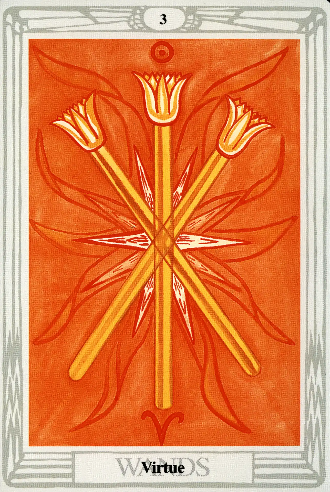

Wands
Three of Wands
Virtue

(Sol in Aries)
10° to 20° Aries
March 31 to April l0
Original Title: Lord of Established Strength.
Golden Dawn Model: A hand (as in the Two of Wands) appears from clouds, and grasps three wands in the center (two crossed, the third upright). Flames appear where wands meet.
King Scale for Binah: Crimson.
The Four Scales for Sol: Orange; Gold Yellow; Rich Amber; Amber, rayed Red.
The Four Scales for Aries: Scarlet; Red; Brilliant Flame; Glowing Red.
Formula: 3 (Binah) of Wands (Atziluth) + Sol in Aries = VIRTUE
Graphically, this card is one of the simplest in the entire deck, and holds closely to the Golden Dawn model. Harris skillfully uses each of the ten colors of the scales to present three gold-and-amber lotus wands trimmed in scarlet and set upon an orange background of brilliant flames. The effect is one, not only of brilliance, but of immense heat. It represents the primal solar energy that first penetrates the soil in spring to awaken seeds that have slumbered all winter.
Along with the aces and twos (the other two cards representing the supernal triad of the Tree of Life), Crowley holds all the threes in particular veneration. The aces are the unmanifest roots of their element and suit, and the twos represent the element and suit manifested as ideas. But with the threes, Crowley argues, “The idea has become fertilized; the triangle has been formulated. In each case, the idea is of a certain stability which can never be upset, but from which a child can issue.” In tarot, that child is the remaining small cards, fours through tens.
What a truly noble and well-aspected card this is. The Sun is in Aries, the sign of his exaltation, and couldn't be happier. Furthermore, this harmonious and energetic marriage takes place in the third sephira, Binah, adding sublime understanding to the mix. The great power (and the will to use that power) that we saw represented by the Two of Wands has now become fertilized and expressed in terms of character as Virtue.